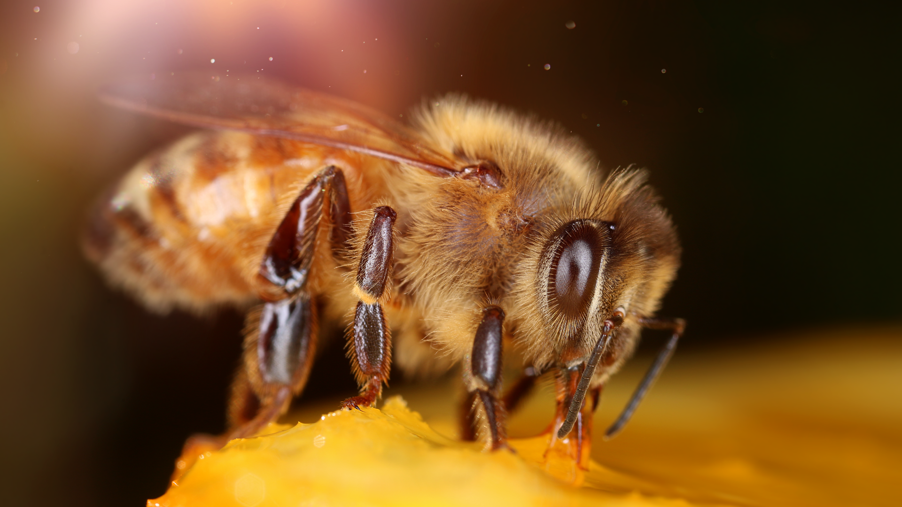
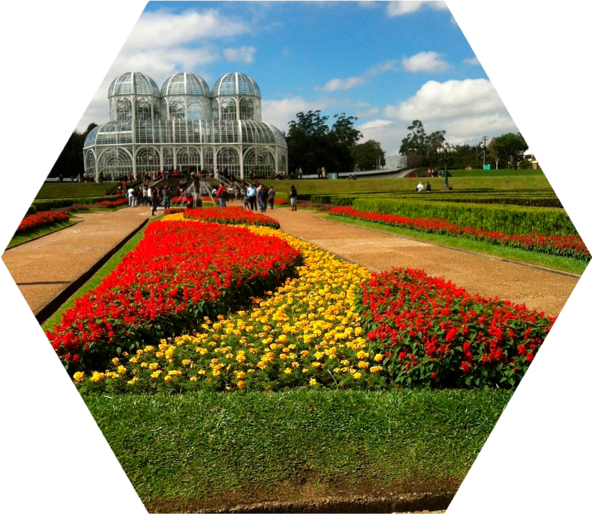

-

Abelhas
-
 Projeto
Projeto -

Onde Estamos
Espécies de abelhas sem ferrão
Uma das vantagens da criação de abelhas nativas, além das já mencionadas, é que a atividade pode ser realizada até em áreas urbanas, como por exemplo, quintal de uma residência, convivendo com pessoas e animais domésticos, desde que haja vegetação na vizinhança. Essas espécies vivem em colônias compostas por muitas operárias, que são as responsáveis pela construção e pela manutenção das colmeias e, sobretudo, por uma rainha geradora de ovos, que dá origem a novas abelhas. Porquanto, com ou sem ferrão, as abelhas têm função importante na natureza. São polinizadoras de plantas, permitindo a floração e a produção de sementes e frutos. Por se tratar de seres tão importantes e sensíveis, seguem alguns passos de como realizar o manejo e o cuidado com as abelhas sem ferrão; partindo desde o início, quando surge o interesse de buscar orientação, até a forma como elas se alimentam e se reproduzem.Para a implantação do HONEYBEE foram pesquisadas diversas espécies de abelhas, dentre estas, as escolhidas foram: Guarupu, Manduri, Mandaçaia, Jataí e Mirim.